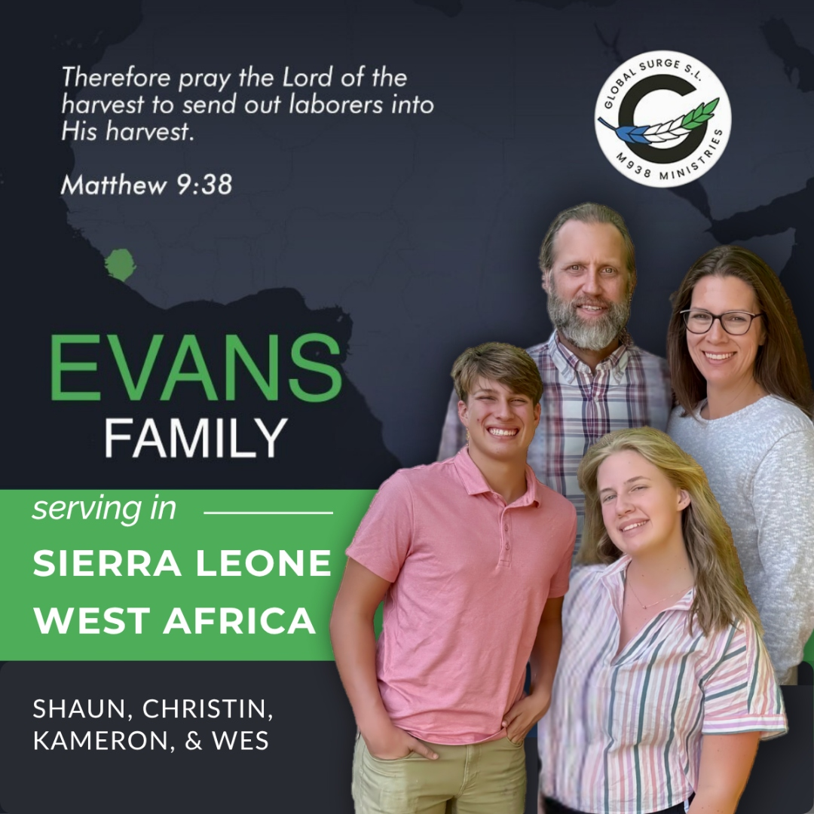

A family united in the mission to see lives transformed by the Gospel of Jesus Christ in Sierra Leone, West Africa.
Our family is united in the mission to see lives transformed by the Gospel. Through evangelistic outreach, discipleship, and leadership development, we are committed to the Great Commission — making disciples of all nations, beginning in Sierra Leone, West Africa.
We are sent by Florence Baptist Temple and serve with Central Missionary Clearinghouse and Global Surge to implement a comprehensive Ministry Pipeline Strategy — from evangelism to discipleship to church planting.

The Evans Family — Shaun, Christin, Kameron & Wes · Sierra Leone, West Africa
Missionary
Shaun is passionate about Biblical training and equipping national pastors to plant local churches. His focus is on developing indigenous church leadership that will outlast and outgrow any foreign missionary presence — building a sustainable, self-replicating movement of the Gospel in Sierra Leone.
Missionary
A devoted wife and mother, Christin actively supports ministry efforts, speaks at women's conferences, and pours into the local community. She has a gift for hospitality and discipleship, building meaningful relationships with women throughout Sierra Leone and encouraging them in their faith.
MK (Missionary Kid)
Kaitlyn, the Evans' oldest daughter, is serving her country as an active duty member of the United States Air Force. Her dedication to service — both to her nation and to the Kingdom of God — is a source of great pride for the whole family. Though stationed apart from the team on the field, she remains a vital part of the Evans family story.
MK (Missionary Kid)
Kameron is creative and compassionate. She enjoys tennis, exercise, and the arts. Growing up in Sierra Leone has shaped her heart for the world and for the people of West Africa. She actively engages with local youth and has a contagious love for life and ministry.
MK (Missionary Kid)
The youngest member of the family, Wes loves adventure and sports — especially basketball. He has embraced life in Sierra Leone with enthusiasm and energy, building friendships with local kids and becoming a natural ambassador for cross-cultural community.
Our Foundation
"Therefore pray the Lord of the harvest to send out laborers into His harvest." This verse — the heart of our ministry name, M938 — drives everything we do. We are laborers sent into a harvest that is truly plentiful.
Our mission is to reach the lost with the Gospel, renew minds through biblical discipleship, raise up national leaders, and release local church planters who will continue the work long after we are gone.
Our Approach
At M938 Ministries | Global Surge S.L., we reach people with the Gospel, build leaders rooted in the Bible, and plant local churches that multiply. Our vision is a healthy local church in every town and village in Sierra Leone.
Seasonal harvest
A tomato plant grows quickly, produces a harvest, and — as a seasonal crop — dies, leaving the gardener to plant again.
Generational harvest
A mango tree requires more time and care before its first harvest, but once established, it can bear fruit in season for decades.
That long-term perspective shapes our ministry. We are not simply looking for immediate results. We are investing in faithful local leaders who will shepherd churches, make disciples, and develop other leaders. The first harvest is only the beginning.
Reach people with the good news of Jesus, gathering new believers and beginning discipleship.
Renew lives through God's Word, grounding believers in sound doctrine and godly living.
Raise qualified local leaders through biblical training, personal discipleship, and hands-on mentoring.
Release these leaders to shepherd churches in their own language and culture, with continued coaching and encouragement.
Developing leaders means more than providing training — it means entrusting them with meaningful responsibility. We equip local pastors to lead rather than making churches dependent on our presence. As they grow, we continue alongside them, helping them strengthen their congregations, develop new leaders, and plant more churches.
Like nurturing a mango tree, this work takes patience, intentional care, and a vision beyond the first harvest. Our prayer is that it will bear fruit long beyond our involvement — as one generation of leaders prepares the next, and healthy churches take root throughout Sierra Leone.
Partners & Affiliations
Sending Church
Florence Baptist TempleEndorsement
Baptist Church Ministry NetworkPartnership
Global SurgeEducation
Global Life UniversityBible Resources
Leadership Ministries WorldwideChurch Health
Healthy Church NetworkScripture App
YouVersion Bible App